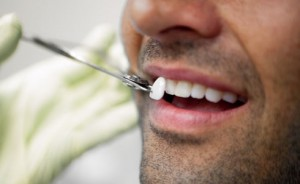

Реставрация зубов – это услуга, которая имеет очень высокую популярность в наше время.
Эстетическая стоматология позволяет решать такие проблемы, как изменение формы зуба, его длины, ширины, скрытие скола и других недостатков, выравнивание зубов в ряду.
Под реставрацией зубов понимают процесс восстановление формы и функциональности разрушенных зубов.
Реставрация зубов – это стоматологические манипуляции, направленные, как на улучшение внешнего вида, так и приведение зубов к максимально приближенному к физиологическому состоянию.
Показания и противопоказания.
Реставрация зубов проводится в следующих случаях:
- Коррекция формы, цвета и размера зуба;
- Если зуб изменил свое положение в ряду;
- При наличии у пациента кривых зубов;
- После лечения кариеса, преследующего восстановление эстетичности зуба;
- При потемнении эмали и наличии пигментации.
К проведению реставрации относят и некоторые противопоказания:
- Наличие аллергии на композитный материал или адгезивы для него;
- При невозможности изолировать зуб и его полость от влаги;
- Сочетание патологической стираемости зубов и прямого прикуса;
- Бруксизм;
- Глубокое резцовое перекрытие;
- Плохой уход за полостью рта или его отсутствие.
Различные методы и способы реставрации зубов позволяют решить следующие проблемы:
- Исправить форму зуба;
- Устранить сколы и неровности;
- Восстановление эмали зуба;
- Скрыть щель между зубами;
- Выровнять положение зуба в ряду.
Методы.
В зависимости от состояния зубов пациента может применяться:
Прямой способ реставрации.
Для восстановления коронковой части зуба применяется композитная реставрация зубов, которая подразумевает использование фотополимеров (светоотверждаемых композитных материалов): композитов, компомеров, гелиокомпозитов, нанокомпозитов.
Срок службы:
Ни один стоматолог не сможет сказать, сколько держится такая реставрация, так как для каждого пациента этот срок индивидуален.
Он зависит от ухода за полостью рта, наличия или отсутствия вредных привычек и т.д.
Если рацион состоит из пищи, преимущественно растительного происхождения, то реставрация продержится долго.
Большую роль играет также профессионализм стоматолога и соблюдение всех норм и правил установки.
Средний срок службы световой пломбы составляет пять лет, но может быть более длительным.
Другие способы прямой реставрации:
Реставрация зубов металлическими вкладками:
- Установка вкладок;
- При больших потерях зубной ткани чаще всего применяется установка штифтовых конструкций.
На их основе в дальнейшем происходит формирование нового зуба.
- Перед фиксацией штифта производится подготовка корневого канала.
- Затем штифт фиксируется в полость корня при помощи специального цемента или с применением современных адгезивных материалов.
- Наибольшей популярностью пользуются анкерные, титановые, стекловолоконные, серебряные штифты.
Этапы проведения.
Выделяют основные этапы проведения реставрации зубов:
- Подготовительный. На данном этапе проводится профессиональная чистка зубов, определяется цвет будущего зуба и соответственно подбирается оттенок композитного материала, который будет использован при реставрации.
- При необходимости проводится местная анестезия.
- Высверливаются пораженные кариесом ткани зуба. В случае замены старой реставрации, высверливается старая пломба и заменяется на новую.
- Зуб изолируют от попадания слюны с помощью коффердама – латексного платка, который надевается на зубы через специальные отверстия. Реставрация, выполненная из композита без надежной изоляции от слюны не способна длительно просуществовать, и может стать причиной таких проблем, как: появление темной полосы или образование кариеса на границе пломба-зуб, а также выпадение реставрации.
При больших потерях зубной ткани чаще всего применяется установка штифтовых конструкций. На их основе в дальнейшем происходит формирование нового зуба. Наибольшей популярностью пользуются анкерные, титановые, стекловолоконные, серебряные штифты.
- Перед фиксацией штифта производится подготовка корневого канала.
- Затем штифт фиксируется в полость корня при помощи специального цемента или с применением современных адгезивных материалов.
- Восстановление формы зуба. Для того, чтобы зуб выглядел, как настоящий применяется техника послойной реставрации. Последовательно наносятся слои композита разных оттенков и прозрачности. Что в итоге придаст новому зубу естественность.
- Окончательное придание зубу необходимой формы с помощью боров, шлифовка и полировка пломбы.

Непрямой способ.
Реставрация зубов непрямым методом – это протезирование.
Для непрямой реставрации характерно применение ортопедических конструкций:
- Изготовление пластинок (виниров).
- Фиксация коронок.
- Замещение отсутствующих зубов (установка мостовидных конструкций).
Самыми эстетичными, среди них, являются виниры. Проведение реставрации винирами характеризуется покрытием передней поверхности зубов микропротезами.
С помощью пластинок провести идеальную реставрацию легче, чем композитными материалами.
Этапы проведения реставрации винирами:
- Подбирается цвет будущего винира.
- Производится местная анестезия (в случае необходимости).
- Производится обточка передней поверхности зуба. Количество снимаемых тканей зависит от клинического случая. Стачивается от 0,5 до 1,5 мм твердых тканей.
- Снятие слепков.
- Фиксация временных пластинок из пластмассы на время изготовления постоянной реставрации. Данная мера является необходимой, чтобы защитить обточенную поверхность зуба от инфицирования и отрицательного воздействия окружающих факторов.
- Изготовление по полученным слепкам в условиях лаборатории винировой накладки.
- Фиксация винира на зуб при помощи специального клея.
Эстетическая реставрация не подразумевает наличие реабилитационного периода. Поэтому последствия проведенной реставрации могут вызвать только легкий дискомфорт в месте фиксации винира, однако он продлится всего несколько дней.
Реставрации имеют некоторые недостатки:
- Пломбы из композита способны со временем темнеть и изменять цвет. Кроме того, они могут потерять блеск, который свойственен настоящим зубам. Если реставрация была проведена на передних зубах, то эта неприятность существенно отразится на эстетике. Поэтому проводить замену таких реставраций придется раз в несколько лет.
- Возможность поломки.
- Факторами риска являются депульпированные зубы, а также восстановленные полностью от корня. В том случае, если будет превышена жевательная нагрузка на зуб, то может произойти отлом зуба или перелом корня. И тогда придется удалить зуб.
|